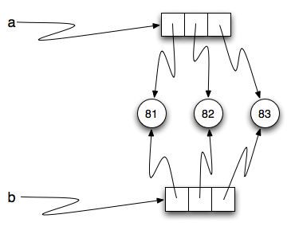

A list is a sequential collection of Python data values, where each value is identified by an
index. The values that make up a list are called its elements. Lists are
similar to strings, which are ordered collections of characters, except that the
elements of a list can have any type and for any one list, the items can be of different types.
There are several ways to create a new list. The simplest is to enclose the
elements in square brackets ( [ and ]).
[10,20,30,40]["spam","bungee","swallow"]
The first example is a list of four integers. The second is a list of three
strings. As we said above, the elements of a list don’t have to be the same type. The following
list contains a string, a float, an integer, and
another list.
["hello",2.0,5,[10,20]]
A list within another list is said to be nested and the inner list is often called a sublist.
Finally, there is a special list that contains no elements. It is called the
empty list, and is denoted [].
As you would expect, we can also assign list values to variables and pass lists as parameters to functions.
As with strings, the function len returns the length of a list (the number
of items in the list). However, since lists can have items which are themselves lists, it important to note
that len only returns the top-most length. In other words, sublists are considered to be a single
item when counting the length of the list.
The syntax for accessing the elements of a list is the same as the syntax for
accessing the characters of a string. We use the index operator ( [] – not to
be confused with an empty list). The expression inside the brackets specifies
the index. Remember that the indices start at 0. Any integer expression can be used
as an index and as with strings, negative index values will locate items from the right instead
of from the left.
Again, as with strings, the + operator concatenates lists.
Similarly, the * operator repeats the items in a list a given number of times.
(chp09_5)
It is important to see that these operators create new lists from the elements of the operand lists. If you concatenate a list with 2 items and a list with 4 items, you will get a new list with 6 items (not a list with two sublists). Similarly, repetition of a list of 2 items 4 times will give a list with 8 items.
One way for us to make this more clear is to run a part of this example in codelens. As you step thru the code, you will see the variables being created and the lists that they refer to. Pay particular attention to the id tag that is shown after the data type descriptor (list(id=12)). The id in Python corresponds to a unique identifier for that particular object. You can tell if you have different objects by comparing the ids.
Source Code
Step ? of ?
Program output:
The statement newlist=fruit+numlist creates a new list object with the contents of the list fruit followed by the contents of the list numlist. We can see it is a new list by looking at the ids. The id of newlist is not the same as the others. It is extremely important to know whether you are creating a new list or just modifying an existing list. Again, the ids can help.
In Python, there is a built-in function that can be called on any object to return its unique id. The function is appropriately called id and takes a single parameter, the object that you are interested in knowing about. You can see in the example below that a real id is usually a very large integer value (corresponding to an address in memory).
The slice operation we saw with strings also work on lists. Remember that the first index is the starting point for the slice and the second number is one index past the end of the slice (up to but not including that element).
Unlike strings, lists are mutable. This means we can change an item in a list by accessing
it directly as part of the assignment statement. Using the indexing operator (square brackets) on the left side of an assignment, we can
update one of the list items.
(ch09_7)
An
assignment to an element of a list is called item assignment. Item
assignment does not work for strings. Recall that strings are immutable.
Here is the same example in codelens so that you can step thru the statements and see the changes to the list elements.
Source Code
Step ? of ?
Program output:
By combining assignment with the slice operator we can update several elements at once.
(ch09_8)
We can also remove elements from a list by assigning the empty list to them.
(ch09_9)
We can even insert elements into a list by squeezing them into an empty slice at the
desired location.
Using slices to delete list elements can be awkward, and therefore error-prone.
Python provides an alternative that is more readable.
The del statement removes an element from a list by using its position.
(ch09_11)
As you might expect, del handles negative indices and causes a runtime
error if the index is out of range.
In addition, you can use a slice as an index for del.
As usual, slices select all the elements up to, but not including, the second
index.
we know that a and b will refer to a string with the letters
"banana". But we don’t know yet whether they point to the same string.
There are two possible ways the Python interpreter could arrange its internal states:
or
In one case, a and b refer to two different string objects that have the same
value. In the second case, they refer to the same object. Remember that an object is something a variable can
refer to.
We already know that objects can be identified using their unique identifier. We can also test whether two names refer to the same object using the is
operator. The is operator will return true if the two references are to the same object. In other words, the references are the same. Try our example from above.
(chp09_is1)
The answer is True. This tells us that both a and b refer to the same object, and that it
is the second of the two reference diagrams that describes the relationship.
Since strings are immutable, Python optimizes resources by making two names
that refer to the same string value refer to the same object.
This is not the case with lists. Consider the following example. Here, a and b refer to two different lists, each of which happens to have the same element values.
(chp09_is2)
The reference diagram for this example looks like this:

a and b have the same value but do not refer to the same object.
There is one other important thing to notice about this reference diagram. The variable a is a reference to a collection of references. Those references actually refer to the integer values in the list. In other words, a list is a collection of references to objects. Interestingly, even though a and b are two different lists (two different collections of references), the integer object 81 is shared by both. Like strings, integers are also immutable so Python optimizes and lets everyone share the same object.
Here is the example in codelens. Pay particular attention to the id values.
Since variables refer to objects, if we assign one variable to another, both
variables refer to the same object:
(listalias1)
In this case, the reference diagram looks like this:
Because the same list has two different names, a and b, we say that it
is aliased. Changes made with one alias affect the other. In the codelens example below, the ids of a and b become the same after executing the assignment statement b=a.
Source Code
Step ? of ?
Program output:
Although this behavior can be useful, it is sometimes unexpected or
undesirable. In general, it is safer to avoid aliasing when you are working
with mutable objects. Of course, for immutable objects, there’s no problem.
That’s why Python is free to alias strings and integers when it sees an opportunity to
economize.
If we want to modify a list and also keep a copy of the original, we need to be
able to make a copy of the list itself, not just the reference. This process is
sometimes called cloning, to avoid the ambiguity of the word copy.
The easiest way to clone a list is to use the slice operator.
Taking any slice of a creates a new list. In this case the slice happens to
consist of the whole list.
Source Code
Step ? of ?
Program output:
Now we are free to make changes to b without worrying about a. Note also that the id of b is different from the id of a. It is an entirely different list.
We have already seen the repetition operator working on strings as well as lists. For example,
(repref1)
With a list, the repetition operator creates copies of the references. Although this may seem simple enough, when we allow a list to refer to another list, a subtle problem can arise.
Consider the following extension on the previous example.
(repref2)
newlist is a list of three references to origlist that were created by the repetition operator. The reference diagram is shown below.
Now, what happens if we modify a value in origlist.
(repref3)
newlist shows the change in three places. This can easily be seen by noting that in the reference diagram, there is only one origlist, so any changes to it appear in all three references from newlist.
Here is the same example in codelens. Step through the code until paying particular attention to the result of executing the assignment statement origlist[1]=99.
The dot operator can also be used to access built-in methods of list objects.
append is a list method which adds the argument passed to it to the end of
the list. Continuing with this example, we show several other list methods. Many of them are
easy to understand.
(chp09_meth1)
There are two ways to use the pop method. The first, with no parameter, will remove and return the
last item of the list. If you provide a parameter for the position, pop will remove and return the
item at that position. Either way the list is changed.
The following table provides a summary of the list methods shown above. Be sure
to experiment with these methods to gain a better understanding of what they do.
It is important to note that append, sort,
and reverse all return None. This means that re-assigning mylist to the result of sorting mylist will result in losing the entire list.
Lets return the the L-systems we introduced in the previous chapter and
introduce a very interesting new feature that requires the use of lists.
Suppose we have the following grammar:
X
X --> F[-X]+X
F --> FF
This L-system looks very similar to the old L-system except that we’ve added
one change. We’ve added the characters ‘[‘ and ‘]’. The meaning of these
characters adds a very interesting new dimension to our L-Systems. The ‘[‘
character indicates that we want to save the state of our turtle,
namely its position and its heading so that we can come back to this position
later. The ‘]’ tells the turtle to warp to the most recently saved position.
The way that we will accomplish this is to use lists. We can save the
heading and position of the turtle as a list of 3 elements. [headingxy] The first index position in the list holds the heading,
the second index position in the list holds the x coordinate,
and the third index position holds the y coordinate.
Now, if we create an empty list and every time we see a ‘[‘ we append the
list that contains [heading,x,y] we create a history of saved places
the turtle has been where the most recently saved location will always be at
the end of the list. When we find a ‘]’ in the string we use the pop
function to remove the the most recently appended information.
Lets modify our drawLsystem function to begin to implement this new
behavior.
(list_lsys1)
When we run this example we can see that the picture is not very interesting,
but notice what gets printed out, and how the saved information about the
turtle gets added and removed from the end of the list. In the next example
we’ll make use of the information from the list to save and restore the
turtle’s position and heading when needed. We’ll use a longer example here
so you get an idea of what the kind of drawing the L-System can really make.
(list_lsys2)
Rather than use the inst string supplied here, use the code from the string
chapter, and write your own applyRules function to implement this L-system.
This example only uses 6 expansions. Try it out with a larger number of
expansions. You may also want to try this example with different values for
the angle and distance parameters.
The append method adds a new item to the end of a list. It is also possible to add a new item to the end of a list by using the concatenation operator. However, you need to be careful.
Consider the following example. The original list has 3 integers. We want to add the word “cat” to the end of the list.
Source Code
Step ? of ?
Program output:
Here we have used append which simply modifies the list. In order to use concatenation, we need to write an assignment statement that uses the accumulator pattern:
origlist=origlist+["cat"]
Note that the word “cat” needs to be placed in a list since the concatenation operator needs two lists to do its work.
Source Code
Step ? of ?
Program output:
It is also important to see that with append, the original list is simply modified. You can see this by watching the id of origlist. It stays the same before and after the append.
On the other hand, with concatenation, you will see that the id of the original list is not the same as the id of the result after the assignment statement. Step through both examples very slowly to see this important difference.
It is also possible to perform list traversal using iteration by item as well as iteration by index.
(chp09_03a)
It almost reads like natural language: For (every) fruit in (the list of) fruits,
print (the name of the) fruit.
We can also use the indices to access the items in an iterative fashion.
(chp09_03b)
In this example, each time through the loop, the variable position is used as an index into the
list, printing the position-eth element. Note that we used len as the upper bound on the range
so that we can iterate correctly no matter how many items are in the list.
Any sequence expression can be used in a for loop. For example, the range function returns a sequence of integers.
(chp09_for3)
This example prints all the multiples of 3 between 0 and 19.
Since lists are mutable, it is often desirable to traverse a list, modifying
each of its elements as you go. The following code squares all the numbers from 1 to
5 using iteration by position.
(chp09_for4)
Take a moment to think about range(len(numbers)) until you understand how
it works. We are interested here in both the value and its index within the
list, so that we can assign a new value to it.
Functions which take lists as arguments and change them during execution are
called modifiers and the changes they make are called side effects.
Passing a list as an argument actually passes a reference to the list, not a
copy of the list. Since lists are mutable changes made to the
elements referenced by the parameter change
the same list that the argument is referencing.
For example, the function below takes a list as an
argument and multiplies each element in the list by 2:
(chp09_parm1)
The parameter aList and the variable things are aliases for the
same object.
Since the list object is shared by two references, there is only one copy.
If a function modifies the elements of a list parameter, the caller sees the change since the change
is occurring to the original.
This can be easily seen in codelens. Note that after the call to doubleStuff, the id of the formal parameter aList is the same as the id of things.
A pure function does not produce side effects. It communicates with the
calling program only through parameters, which it does not modify, and a return
value. Here is the doubleStuff function from the previous section written as a pure function.
To use the pure function version of double_stuff to modify things,
you would assign the return value back to things.
(ch09_mod2)
Once again, codelens helps us to see the actual references and objects as they are passed and returned.
Anything that can be done with modifiers can also be done with pure functions.
In fact, some programming languages only allow pure functions. There is some
evidence that programs that use pure functions are faster to develop and less
error-prone than programs that use modifiers. Nevertheless, modifiers are
convenient at times, and in some cases, functional programs are less efficient.
In general, we recommend that you write pure functions whenever it is
reasonable to do so and resort to modifiers only if there is a compelling
advantage. This approach might be called a functional programming style.
The pure version of doubleStuff above made use of an
important pattern for your toolbox. Whenever you need to
write a function that creates and returns a list, the pattern is
usually:
initialize a result variable to be an empty list
loop
create a new element
append it to result
return the result
Let us show another use of this pattern. Assume you already have a function
is_prime(x) that can test if x is prime. Now, write a function
to return a list of all prime numbers less than n:
defprimes_upto(n):""" Return a list of all prime numbers less than n. """result=[]foriinrange(2,n):ifis_prime(i):result.append(i)returnresult
The previous example creates a list from a sequence of values based on some selection criteria. An easy way to do this type of processing in Python is to use a list comprehension. List comprehensions are concise ways to create lists. The general syntax is:
[<expression> for <item> in <sequence> if <condition>]
where the if clause is optional. For example,
(listcomp1)
The expression describes each element of the list that is being built. The for clause iterates thru each item in a sequence. The items are filtered by the if clause if there is one. In the example above, the for statement lets item take on all the values in the list mylist. Each item is then squared before it is added to the list that is being built. The result is a list of squares of the values in mylist.
To write the primes_upto function we will use the is_prime function to filter the sequence of integers coming from the range function. In other words, for every integer from 2 up to but not including n, if the integer is prime, keep it in the list.
defprimes_upto(n):""" Return a list of all prime numbers less than n using a list comprehension. """result=[numfornuminrange(2,n)ifis_prime(num)]returnresult
A nested list is a list that appears as an element in another list. In this
list, the element with index 3 is a nested list.
If we print(nested[3]), we get [10,20]. To extract an element from the
nested list, we can proceed in two steps. First, extract the nested list, then extract the item
of interest. It is also possible to combine those steps using bracket operators that evaluate from
left to right.
Two of the most useful methods on strings involve lists of
strings. The split method
breaks a string into a list of words. By
default, any number of whitespace characters is considered a word boundary.
(ch09_split1)
An optional argument called a delimiter can be used to specify which
characters to use as word boundaries. The following example uses the string
ai as the delimiter:
(ch09_split2)
Notice that the delimiter doesn’t appear in the result.
The inverse of the split method is join. You choose a
desired separator string, (often called the glue)
and join the list with the glue between each of the elements.
(ch09_join)
The list that you glue together (wds in this example) is not modified. Also,
you can use empty glue or multi-character strings as glue.
Python has a built-in type conversion function called
list that tries to turn whatever you give it
into a list. For example, try the following:
(ch09_list1)
The string “Crunchy Frog” is turned into a list by taking each character in the string and placing it in a list. In general, any sequence can be turned into a list using this function. The result will be a list containing the elements in the original sequence. It is not legal to use the list conversion function on any argument that is not a sequence.
It is also important to point out that the list conversion function will place each element of the original sequence in the new list. When working with strings, this is very different than the result of the split method. Whereas split will break a string into a list of “words”, list will always break it into a list of characters.
So far you have seen two types of sequential collections: strings, which are made up of
characters; and lists, which are made up of elements of any type. One of the
differences we noted is that the elements of a list can be modified, but the
characters in a string cannot. In other words, strings are immutable and
lists are mutable.
A tuple, like a list, is a sequence of items of any type. Unlike lists,
however, tuples are immutable. Syntactically, a tuple is a comma-separated
sequence of values. Although it is not necessary, it is conventional to
enclose tuples in parentheses:
Tuples are useful for representing what other languages often call records —
some related information that belongs together, like your student record. There is
no description of what each of these fields means, but we can guess. A tuple
lets us “chunk” together related information and use it as a single thing.
Tuples support the same sequence operations as strings and
lists.
For example, the index operator selects an element from a tuple.
As with strings, if we try to use item assignment to modify one of the elements of the
tuple, we get an error.
Of course, even if we can’t modify the elements of a tuple, we can make a variable
reference a new tuple holding different information. To construct the new tuple,
it is convenient that we can slice parts of the old tuple and join up the
bits to make the new tuple. So julia has a new recent film, and we might want
to change her tuple. We can easily slice off the parts we want and concatenate them with
the new tuple.
(ch09_tuple1)
To create a tuple with a single element (but you’re probably not likely
to do that too often), we have to include the final comma, because without
the final comma, Python treats the (5) below as an integer in parentheses:
Python has a very powerful tuple assignment feature that allows a tuple of variables
on the left of an assignment to be assigned values from a tuple
on the right of the assignment.
This does the equivalent of seven assignment statements, all on one easy line.
One requirement is that the number of variables on the left must match the number
of elements in the tuple.
Once in a while, it is useful to swap the values of two variables. With
conventional assignment statements, we have to use a temporary variable. For
example, to swap a and b:
temp=aa=bb=temp
Tuple assignment solves this problem neatly:
(a,b)=(b,a)
The left side is a tuple of variables; the right side is a tuple of values.
Each value is assigned to its respective variable. All the expressions on the
right side are evaluated before any of the assignments. This feature makes
tuple assignment quite versatile.
Naturally, the number of variables on the left and the number of values on the
right have to be the same.
>>> (a,b,c,d)=(1,2,3)ValueError: need more than 3 values to unpack
Functions can return tuples as return values. This is very useful — we often want to
know some batsman’s highest and lowest score, or we want to find the mean and the standard
deviation, or we want to know the year, the month, and the day, or if we’re doing some
some ecological modeling we may want to know the number of rabbits and the number
of wolves on an island at a given time. In each case, a function (which
can only return a single value), can create a single tuple holding multiple elements.
For example, we could write a function that returns both the area and the circumference
of a circle of radius r.
Multiple variables that contain references to the same object.
clone
To create a new object that has the same value as an existing object.
Copying a reference to an object creates an alias but doesn’t clone the
object.
delimiter
A character or string used to indicate where a string should be split.
element
One of the values in a list (or other sequence). The bracket operator
selects elements of a list.
index
An integer variable or value that indicates an element of a list.
list
A collection of objects, where each object is identified by an index.
Like other types str, int, float, etc. there is also a
list type-converter function that tries to turn its argument into a
list.
list traversal
The sequential accessing of each element in a list.
modifier
A function which changes its arguments inside the function body. Only
mutable types can be changed by modifiers.
mutable data type
A data type in which the elements can be modified. All mutable types
are compound types. Lists are mutable data types; strings are not.
nested list
A list that is an element of another list.
object
A thing to which a variable can refer.
pattern
A sequence of statements, or a style of coding something that has
general applicability in a number of different situations. Part of
becoming a mature Computer Scientist is to learn and establish the
patterns and algorithms that form your toolkit. Patterns often
correspond to your “mental chunking”.
pure function
A function which has no side effects. Pure functions only make changes
to the calling program through their return values.
sequence
Any of the data types that consist of an ordered collection of elements, with
each element identified by an index.
side effect
A change in the state of a program made by calling a function that is
not a result of reading the return value from the function. Side
effects can only be produced by modifiers.
Draw a reference diagram for a and b before and after the third line of
the following python code is executed:
a=[1,2,3]b=a[:]b[0]=5
Create a list called myList with the following six items: 76, 92.3, “hello”, True, 4, 76.
Write Python statements to do the following:
Append “apple” and 76 to the list.
Insert the value “cat” at position 3.
Insert the value 99 at the start of the list.
Find the index of “hello”.
Count the number of 76s in the list.
Remove the first occurrence of 76 from the list.
Remove True from the list using pop and index.
Create a list containing 100 random integers between 0 and 1000 (use iteration, append, and the random module). Write a function called average that will take the list as a parameter and return the average.
Write a Python function that will take a the list of integers from the previous problem and return the maximum value. (Note: there is a builtin function named max but pretend you cannot use it.)
Write a function to count how many odd numbers are in a list.
Sum up all the even numbers in a list.
Sum up all the negative numbers in a list.
Count how many words in a list have length 5.
Sum all the elements in a list up to but not including the first even number.
Count how many words occur in a list up to and including the first occurrence of the word “sam”.
Although Python provides us with many list methods, it is good practice and very instructive to think about how they are implemented. Implement a Python function that works like the following:
count
in
reverse
index
insert
Write a function replace(s,old,new) that replaces all occurences of
old with new in a string s:
test(replace('Mississippi','i','I'),'MIssIssIppI')s='I love spom! Spom is my favorite food. Spom, spom, spom, yum!'test(replace(s,'om','am'),'I love spam! Spam is my favorite food. Spam, spam, spam, yum!')test(replace(s,'o','a'),'I lave spam! Spam is my favarite faad. Spam, spam, spam, yum!')
Hint: use the split and join methods.
Here are the rules for an L-system that creates something that resembles
a common garden herb. Implement the following rules and try it. Use an
angle of 25.7 degrees.: